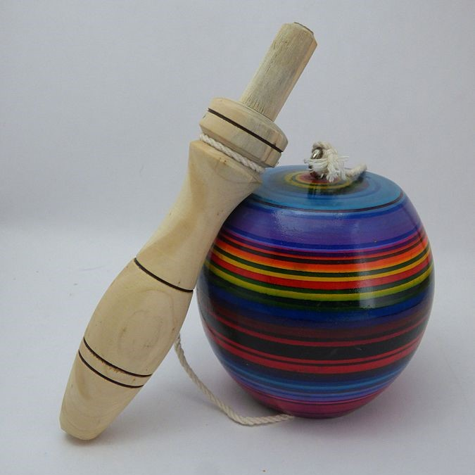
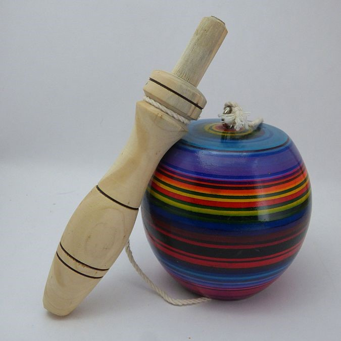

Comunicación
Comunicación
En la casita antañona, una casita típica de principio del siglo XX, los visitantes estarán en contacto con la tecnología y costumbres de épocas pasadas , experimentándola y descubriéndola a través de la manipulación de estos objetos y juguetes de antaño.
Con esta interacción los visitantes re-descubrirán los juegos y juguetes de antaño, como los yo-yos, el saltar la cuerda, la perinola, el papagayo y el gurrufío.
Si tienes la suerte de encontrarte con un guía, también podrás experimentar de primera mano como fabricar papagayos y gurrufíos, para que lleves contigo un poco de la Venezuela de antier.
Parece que tuvo su origen en la antigua China; también se encuentra dibujado en algunas decoraciones de la cerámica clásica griega. Se hizo muy popular en el siglo XVIII al aficionarse a él la aristocracia francesa y británica. El Duque de Wellington fue uno de los yo-yofilos de la época napoleónica.
“Saltar la cuerda” es un juego con el que cada país suele cantar versos tradicionales al ritmo en que se va saltando la cuerda. Lo pueden jugar uno o más niños. La longitud de la cuerda es de acuerdo al número de jugadores. Este juego también es utilizado por adultos como ejercicio de entrenamiento tal como hacen los boxeadores y los atletas.


Este es un juego muy antiguo y se practica en muchos países. “La perinola” como se conoce en Venezuela puede ser de madera, de marfil, hueso o plástico. Su finalidad es siempre la misma: ensartar la bola en el palo que se sostiene en la mano.
 

El papagayo llegó a nuestro país en el siglo XVII, pero los primeros se fabricaron en China, hace más de tres mil años. Este juego es muy tradicional en Venezuela. Además de imaginación e ingenio, para armar un papagayo necesitas veradas o madera balza, pabilo, papel y goma.
En diversas regiones de Venezuela se le conoce con el nombre de tariba, susun, zumbador, resonador o runche, y lo graciosos del mismo es el sonido que produce pues al moverlo parece un ronquido, o el zumbido de un viento fuerte. Es un juego muy popular por lo fácil de hacer. Aquí te damos las instrucciones para que construyas uno. Necesitas chapas de refresco, martillo y pabilo.